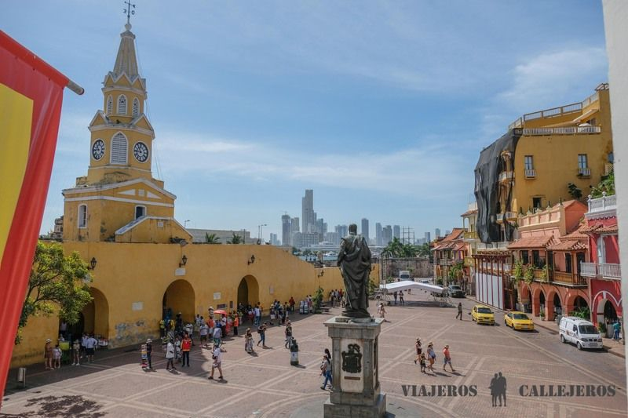
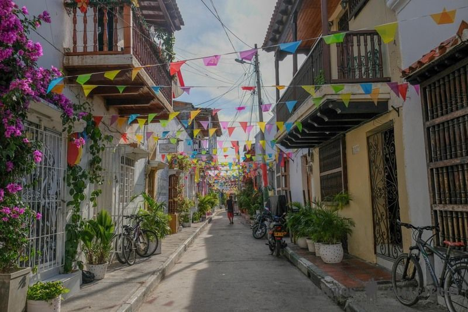
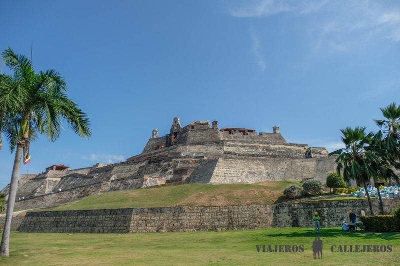

<header>
  <a href="#" class="logo">Safe Trabel</a>
  <nav>
    <ul>
      <li><a href="#">Descubrir</a></li>
      <li><a href="#">Viajes</a></li>
      <li><a href="#">Escribir opcion</a></li>


    </ul>
  </nav>

</header>
<section class="zona1"></section>
<section class="playascartagena">
   <h2>Playas cartagena</h2>
   <p> playas recomendadas de cartagena</p>
   <div>
    
     
     
     
   </div>
</section>
<section class="containerrecomendaciones">
    <h2>Recomendaciones</h2>
  
    <div >
        
         
         
         
    </div>
</section>